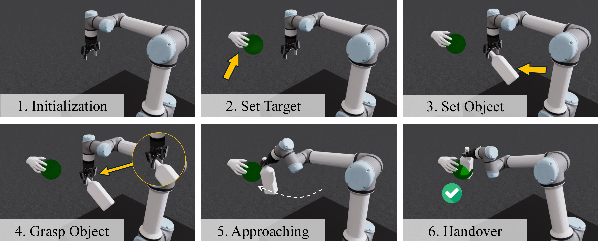
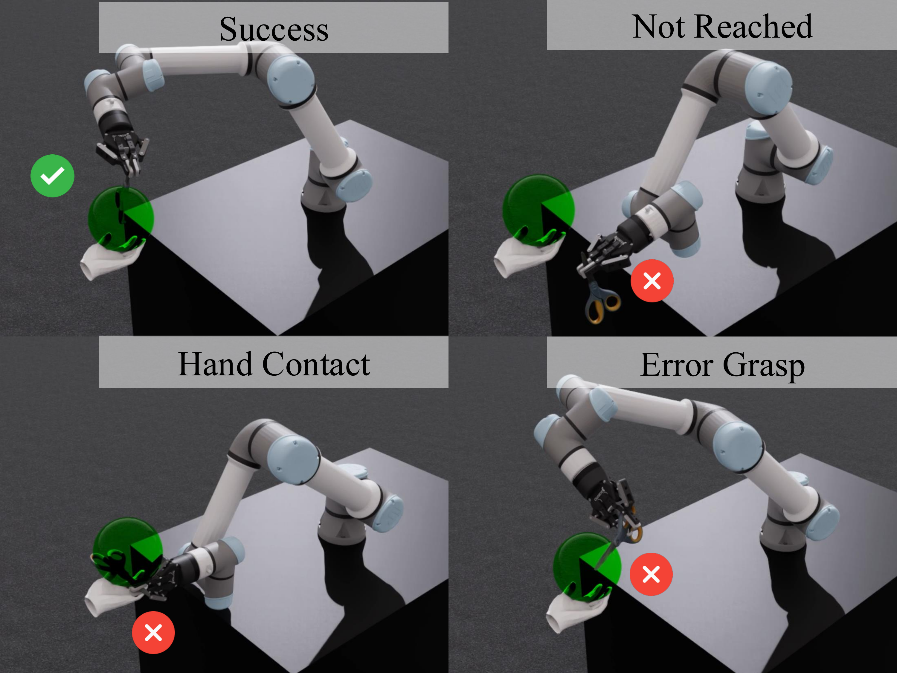
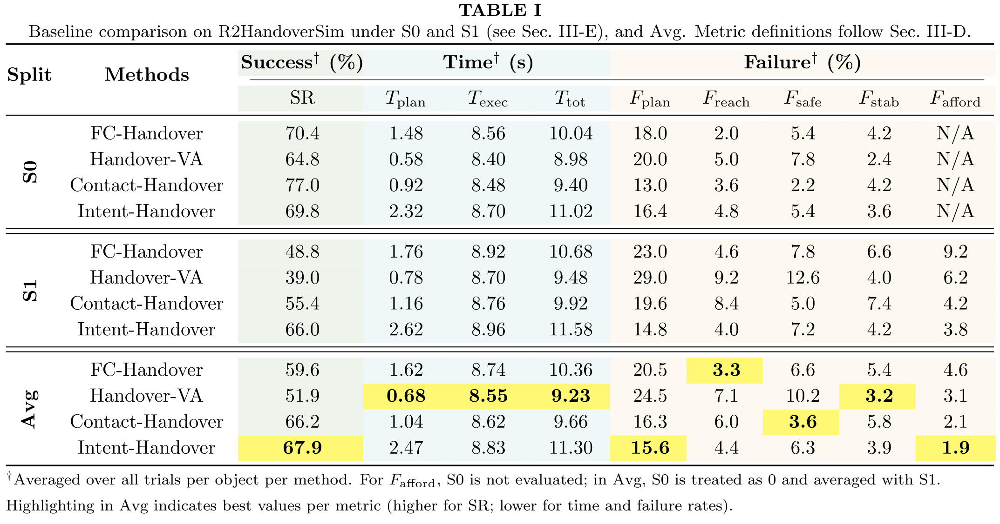
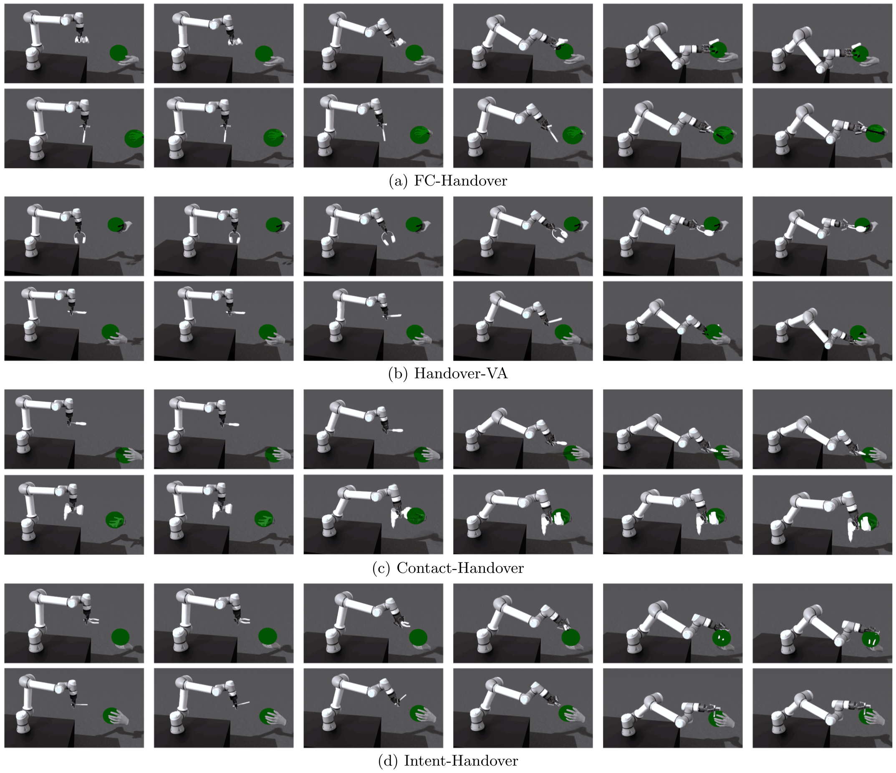
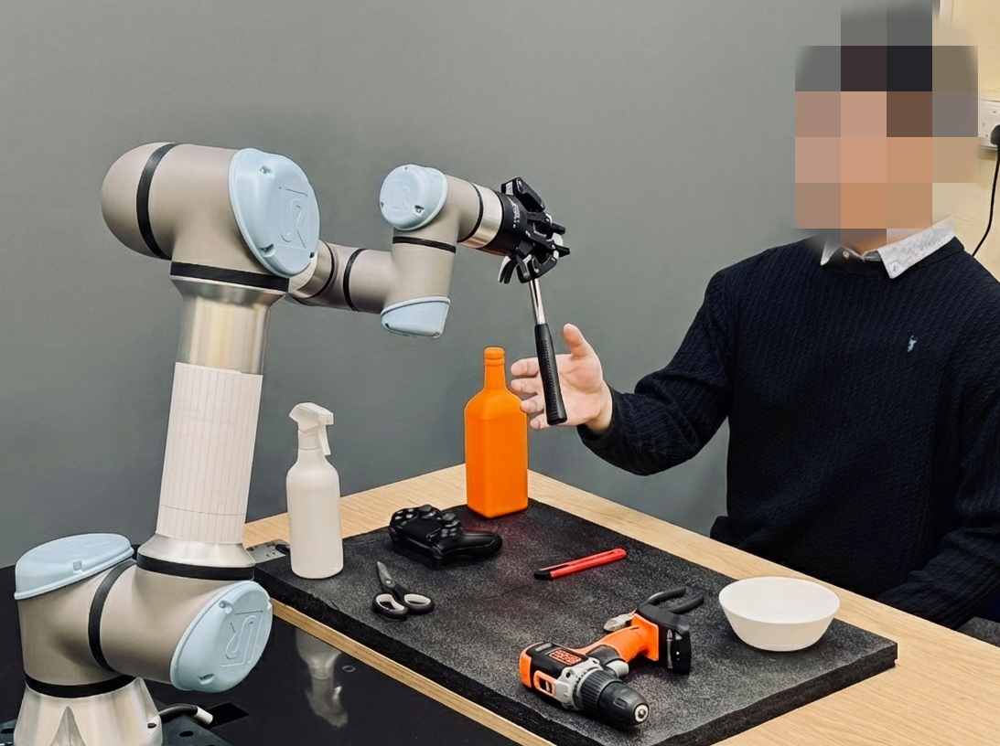
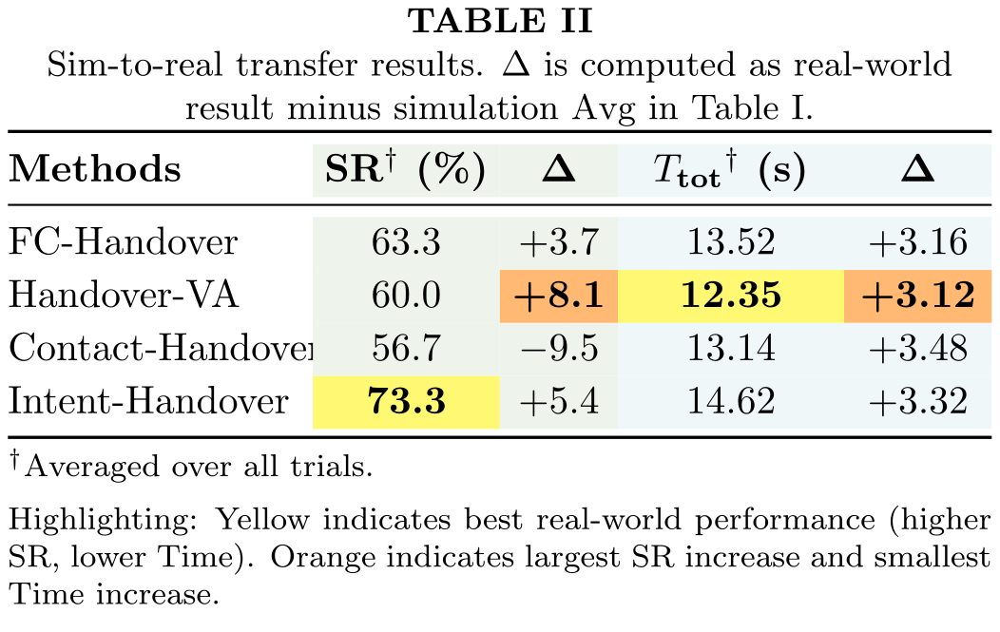
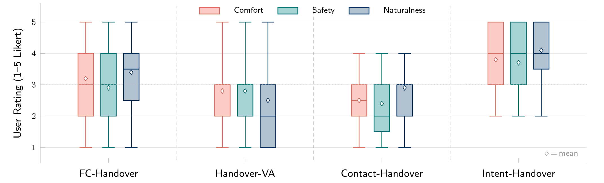

Trial Protocol
Standardized evaluation protocol
Each method outputs a grasp pose and a handover pose; R2HandoverSim then runs grasping, planning, approach motion, and evaluation.

R2HandoverSim enables standardized, reproducible evaluation of robot-to-human handover methods.
Each method outputs a grasp pose and a handover pose; R2HandoverSim then runs grasping, planning, approach motion, and evaluation.

The benchmark uses 16 daily objects spanning ShapeNet, YCB, and ContactDB, from compact cups to bulky dispensers and functionally constrained tools.

Each trial is evaluated with five binary metrics.
A kinematically feasible, collision-free trajectory to the handover pose must exist.
The object must be delivered near the receiver's hand.
The gripper must physically close on the object without dropping it.
The robot's grasp must not occupy the receiver's intended grasp region.
The delivery motion must complete without contacting the human hand.
A trial is attributed to the first evaluated criterion that fails; consequently, the reported failure rates are mutually exclusive and sum to 1 - SR within each split.

Four baselines are compared on predicted shared grasp poses under S0, S1, and average performance.
Objects with relatively unconstrained handover configurations.
Objects with stronger functional constraints on grasp and handover orientation.
Contact-Handover leads in S0 success rate; Intent-Handover leads in average success rate and S1 success rate.

Each row shows grasp pose, approach trajectory, and final handover pose for the same object-hand pair.

Four baselines are deployed on the physical platform with 30 participants and 600 total trials.
Intent-Handover achieves the highest real-world success rate (73.3%), followed by FC-Handover (63.3%).

Contact-Handover is the only method with negative transfer.

Intent-Handover ranks first in simulation success rate and user ratings; Contact-Handover ranks second in simulation success rate but lowest in comfort and safety.
To what extent does simulation success rate predict perceived handover quality beyond task completion?
Higher simulation success rate should correspond to higher comfort, perceived safety, and naturalness.
Partially refuted: a higher success rate does not necessarily mean better user experience; functional-region affordance is critical to perceived handover quality.

@inproceedings{zhang2026r2handoversim,
title={R2HandoverSim: A Simulation Framework and Benchmark for Robot-to-Human Object Handovers},
author={Zhang, Hanxin and Dhafer, Abdulqader and Dong, Hongbiao and Hao, Zhou Daniel},
booktitle={IEEE/RSJ International Conference on Intelligent Robots and Systems},
year={2026}
}